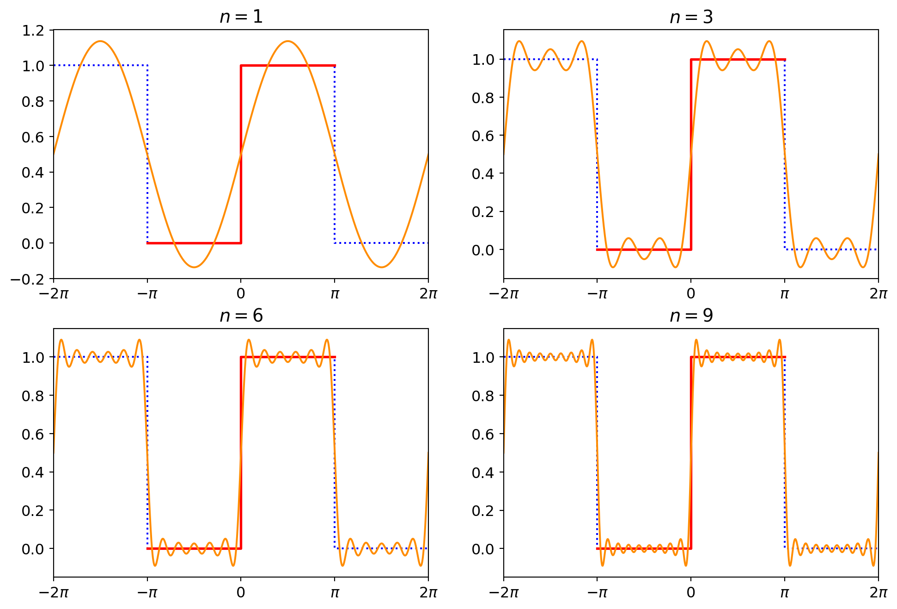
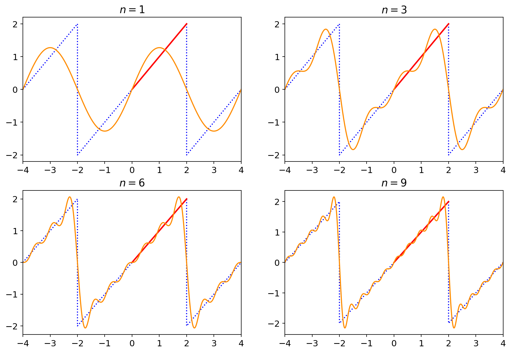
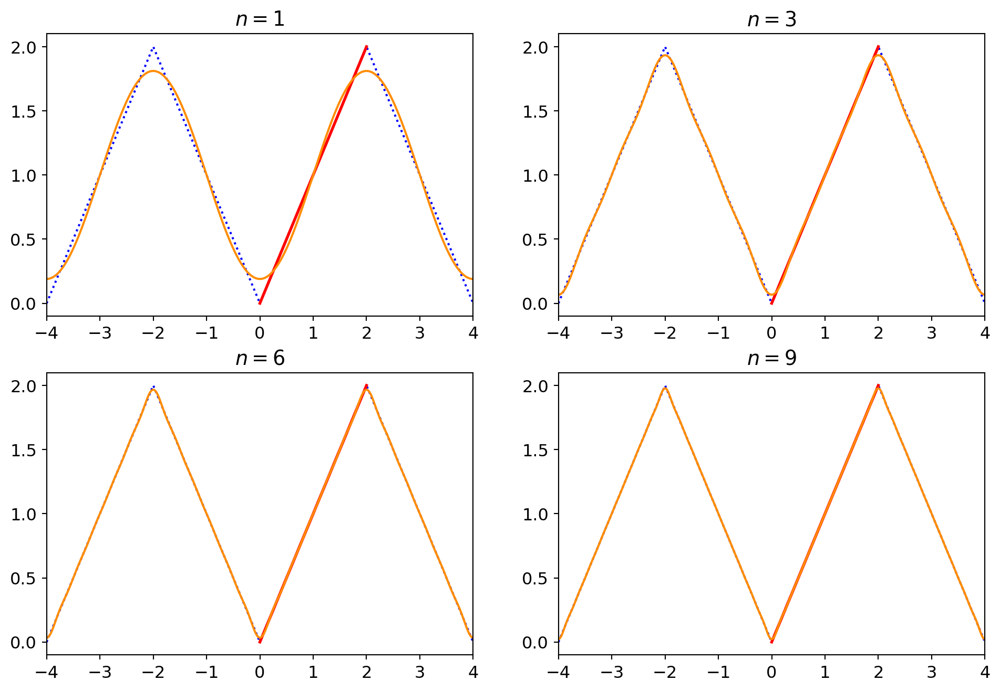
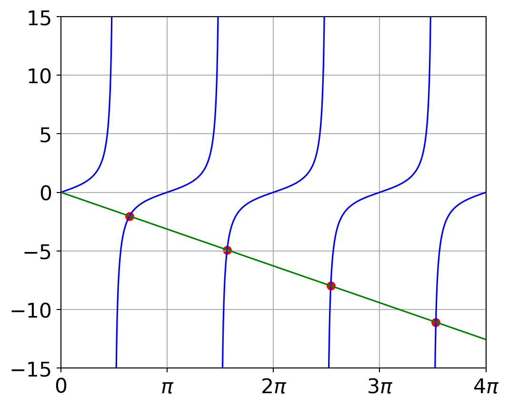
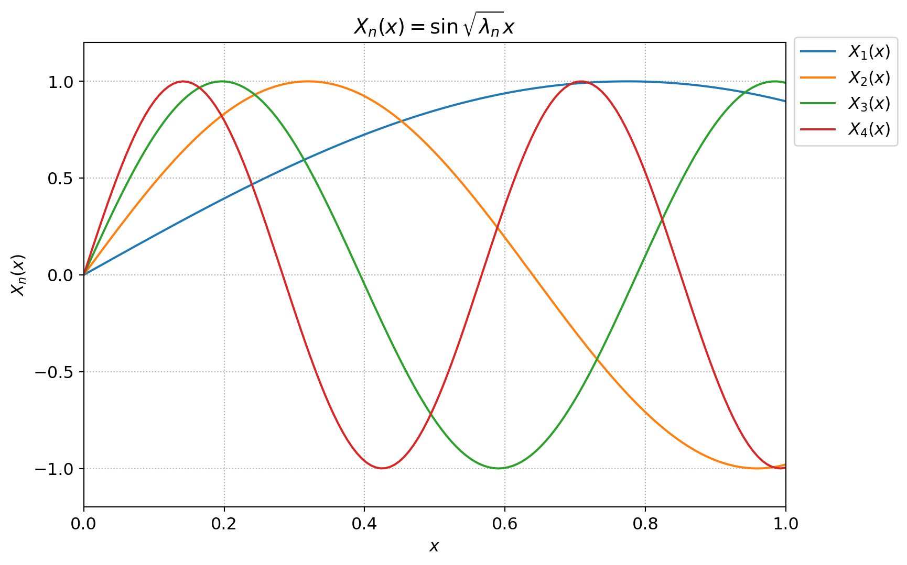
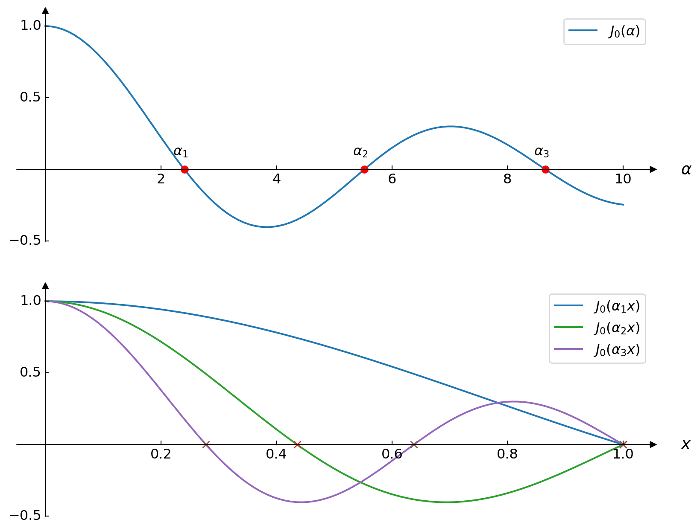
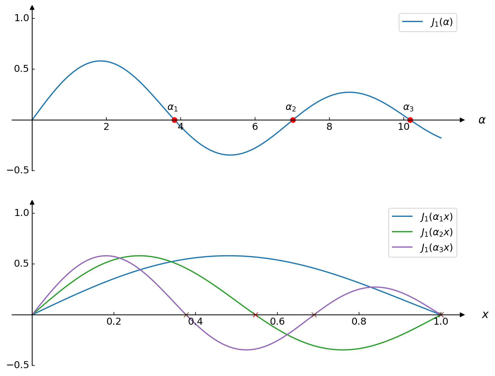
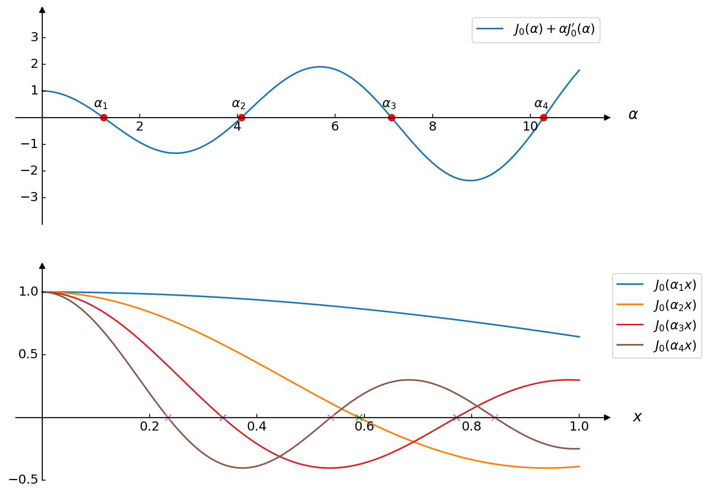
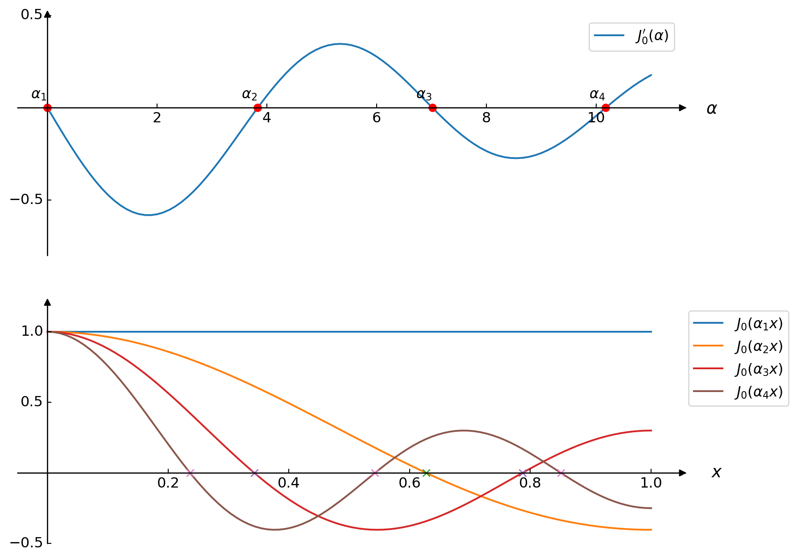
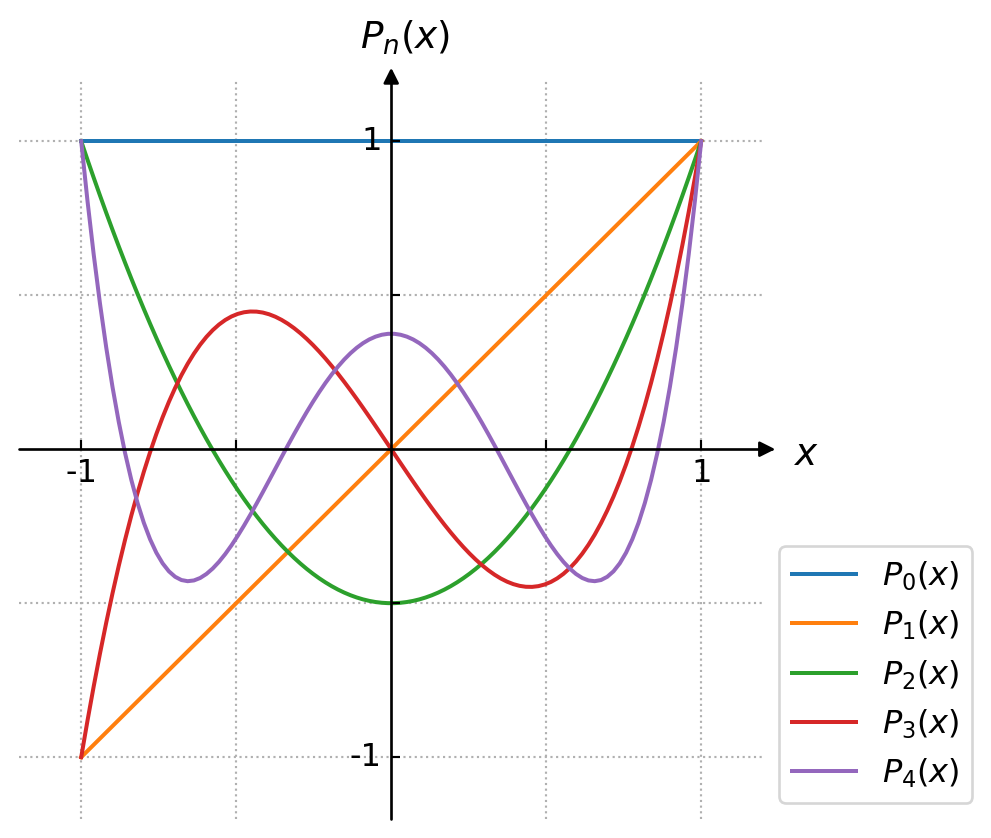

Engineering Mathematics II
Chapter 12. Orthogonal Functions and Fourier Series
12.1 \(~\) Orthogonal Functions
Inner Product
If \(\mathbf{u}=u_1\mathbf{i} +u_2\mathbf{j} +u_3\mathbf{k}\) and \(\mathbf{v} =v_1\mathbf{i} +v_2\mathbf{j} +v_3\mathbf{k}\) are two vectors in \(\mathbb{R}^3\), \(~\)then inner product is defined:
\[(\mathbf{u},\mathbf{v})=u_1v_1 +u_2v_2 +u_3v_3=u_iv_i\]
The inner product \((\mathbf{u},\mathbf{v})\) possesses the following properties:
- \((\mathbf{u},\mathbf{v})=(\mathbf{v},\mathbf{u})\)
- \((k\mathbf{u},\mathbf{v})=k(\mathbf{u},\mathbf{v})\), \(\;k\) a scalar
- \((\mathbf{u},\mathbf{u})=0\,\) if \(\,\mathbf{u}=\mathbf{0}\,\) and \(\,(\mathbf{u},\mathbf{u})>0\,\) if \(\,\mathbf{u}\neq\mathbf{0}\)
- \((\mathbf{u}+\mathbf{v},\mathbf{w})=(\mathbf{u},\mathbf{w}) +(\mathbf{v},\mathbf{w})\)
Inner Product of Functions
The inner product of two functions \(f_1\) and \(f_2\) on an interval \([a,b]\) is the number
\[ (f_1,f_2)=\int_a^b f_1(x)\, f_2(x) \,dx\]
Orthogonal Functions
Two functions \(f_1\) and \(f_2\) are said to be orthogonal on \([a,b]\) if
\[(f_1,f_2)=\int_a^b f_1(x)\, f_2(x) \,dx=0\]
Orthogonal Sets
A set of real-valued functions \(\{\phi_0(x),\phi_1(x),\phi_2(x),\cdots\}\) is said to be orthogonal on \([a,b]\;\) if
\[(\phi_m,\phi_n)=\int_a^b \phi_m(x) \phi_n(x) \,dx=0, \;\;m\neq n\]
With the property that \(\|\phi_n(x)\|=1\), then \(\{\phi_n(x)\}\) is said to be an orthonormal set on the interval
Example \(\displaystyle \left\{ \frac{1}{\sqrt{2\pi}}, \frac{\cos x}{\sqrt{\pi}}, \frac{\cos 2x}{\sqrt{\pi}},\cdots \right\}\), \(\;\; -\pi \leq x\leq \pi\)
Orthogonal Series Expansion
Suppose \(\left\{ \phi_n(x)\right\}\) is an infinite orthogonal set of functions on \([a,b]\;\). If \(y=f(x)\) is a function defined on \([a,b]\),
\[{\scriptsize\begin{align*} \color{blue}{f(x)} &\; \color{blue}{= c_0\phi_0(x) +c_1\phi_1(x) +\cdots +c_n\phi_n(x)+\cdots}\\ &\; {\tiny\Downarrow}\\ {\tiny \int_a^b f(x) \phi_n(x)\,dx} &\; {\tiny =c_0\int_a^b \phi_0(x) \phi_n(x)\,dx +c_1\int_a^b \phi_1(x)\phi_n(x)\,dx +\cdots +c_n\int_a^b \phi_n^2(x)\,dx+\cdots}\\ &\; {\tiny = c_n\int_a^b \phi_n^2(x)\,dx} \\ &\; {\tiny\Downarrow} \\ \color{red}{c_n} & \color{red}{= \frac{\displaystyle \int_a^b f(x)\,\phi_n(x)\,dx}{\displaystyle \int_a^b \phi_n^2(x)\,dx},\;\;n=0,1,2,\cdots} \end{align*}}\]
Orthogonal Set/Weight Function
A set of real-valued functions \(\{\phi_0(x),\phi_1(x),\phi_2(x),\cdots\}\,\) is said to be orthogonal with respect to a weight function \(w(x)\) on \([a,b]\;\) if
\[{\scriptsize(\phi_m,\phi_n)=\int_a^b w(x)\phi_m(x) \phi_n(x) \,dx=0, \;\;m\neq n}\]
With this inner product notation,
\[ {\scriptsize f(x)=\sum_{n=0}^\infty c_n \phi_n(x)}\]
where \(~{\scriptsize c_n=\frac{\displaystyle\int_a^b f(x)w(x)\phi_n(x)\,dx}{\displaystyle\int_a^b w(x) \phi_n^2(x)\,dx}}\)
12.2 \(~\) Fourier Series
Trigonometric Series
\[ \left\{ 1, \,\cos\frac{\pi}{p}x, \,\cos\frac{2\pi}{p}x, \,\cos\frac{3\pi}{p}x,\cdots, \,\sin\frac{\pi}{p}x, \,\sin\frac{2\pi}{p}x, \,\sin\frac{3\pi}{p}x, \,\cdots \right\} \]
Fourier Series
The Fourier series of a function \(f\) defined on the interval \((-p,p)\,\) is given by
\[ f(x)=\frac{a_0}{2} +\sum_{n=1}^\infty \left( a_n\cos\frac{n\pi}{p}x +b_n\sin\frac{n\pi}{p}x \right)\]
where
\[{\scriptsize \begin{align*} a_n &= \frac{1}{p}\int_{-p}^p f(x)\cos\frac{n\pi}{p}x \,dx, \;\;\; a_0 = \frac{1}{p}\int_{-p}^p f(x)\,dx \\ b_n &= \frac{1}{p}\int_{-p}^p f(x)\sin\frac{n\pi}{p}x \,dx \end{align*}}\]
At a point of discontinuity, the Fourier series converges to the average \(\displaystyle {\tiny \;\frac{f(x^+)+f(x^-)}{2}}\)
Example
\(\displaystyle f(x)= \begin{cases} 0, & -\pi \leq x \leq 0 \\ 1, & \;\;\, 0 < x \leq \pi \end{cases}\)
\(\;\;\;\;\;\;\Downarrow\)
\(\displaystyle f(x)=\frac{1}{2} +\sum_{m=1}^\infty \frac{2}{(2m -1)\pi} \sin{(2m -1)x}\)
- The overshooting by the partial sums from the functional values near a point of discontinuity dose not smooth out but remains fairly constant. This behavior of a Fourier series near a point at which \(f\) is discontinuous is known as the Gibbs phenomenon
12.3 \(~\) Fourier Cosine and Sine Series
Properties of Even and Odd Functions
\(\begin{align*} &f_{\text{even}} \cdot \; g_{\text{even}} \text{ is even}\\ &f_{\text{odd}} \;\cdot \; g_{\text{odd}} \,\text{ is even}\\ &f_{\text{even}} \cdot \; g_{\text{odd}} \,\text{ is odd}\\ \end{align*}\)
If \(\,f\,\) is even, \(~\) then
\(\displaystyle \int_{-a}^a f(x)\,dx = 2\int_0^a f(x)\,dx\)
If \(\,f\,\) is odd, \(~\)then
\(\displaystyle \int_{-a}^a f(x)\,dx = 0\)
The Fourier series of an even function on the interval \((-p,p)\,\) is the cosine series
\[ f(x)=\frac{a_0}{2} +\sum_{n=1}^\infty a_n \cos\frac{n\pi}{p}x \]
\(\text{where }\;\displaystyle a_0=\frac{2}{p} \int_0^p f(x)\,dx,\;\;\; a_n=\frac{2}{p} \int_0^p f(x) \cos\frac{n\pi}{p}x \,dx\)
The Fourier series of an odd function on the interval \((-p,p)\,\) is the sine series
\[ f(x)=\sum_{n=1}^\infty b_n \sin\frac{n\pi}{p}x\;\;\;\text{where}\;\displaystyle b_n=\frac{2}{p} \int_0^p f(x) \sin\frac{n\pi}{p}x \,dx \]
Example
\(~\)
\(\displaystyle f(x)= x, \;\;0 < x < 2\)
\(\;\;\;\;\;\;\Downarrow\)
\(\displaystyle f(x)=\frac{4}{\pi}\sum_{n=1}^\infty \frac{(-1)^{n +1}}{n} \sin{\frac{n\pi}{2}x}\)
\(\quad\;\;\text{or}\)
\(\displaystyle f(x)=1 -\frac{8}{\pi^2}\sum_{m=1}^\infty \frac{1}{(2m -1)^2} \cos{\frac{(2m -1)\pi}{2}x}\)


Half-Range Expansion
Throughout the preceding discussion, \(~\)it was understood that a function \(f\) was defined on an interval with the origin as midpoint
However, in many instances, \(~\)we are interested in representing a function that is defined only for \(0<x<L~\) by a trigonometric series
This can be done in many different ways by supplying an arbitrary definition of the function on the interval \(-L<x<0\). \(~\)For brevity we condider three most important cases:
\(~\)
Reflect the graph of the function about the \(y\)-axis onto \(-L<x<0\)
Reflect the graph of the function through the origin onto \(-L<x<0\)
Define \(f\) on \(-L<x<0\;\) by \(f(x)=f(x+L)\)

12.4 \(~\) Complex Fourier Series
Complex Fourier Series
The complex Fourier series of functions \(\,f\) defined on an interval \((-p,p)\,\) is given by
\[ f(x)=\sum_{n=-\infty}^\infty c_n e^{\frac{in\pi}{p}x} \]
where
\[ c_n=\frac{1}{2p}\int_{-p}^p f(x) e^{-\frac{in\pi}{p}x}\,dx \]
Fundamental Frequency
The Fourier series define a periodic function and the fundamental period of that function is \(T=2p\). \(\text{ }\)Since \(p=T/2\),
\[ \frac{a_0}{2} +\sum_{n=1}^\infty (a_n \cos n\omega x +b_n \sin n\omega x)\;\;\]
\[\text{and}\]
\[ \;\;\sum_{n=-\infty}^\infty c_n e^{in\omega x}\]
where \(\omega=2\pi/T\) is called the fundamental angular frequency
Frequency Spectrum
If \(\,f\) is periodic and has fundamental period \(T\), \(\text{ }\)the plot of the points \((n\omega, |c_n|)\) is called the frequency spectrum of \(\;f\)
Example
Expand \(\;f(x)=e^{-x}\), \(\;-\pi<x<\pi\;\) in a complex Fourier series and find the frequency spectrum
12.5 \(~\) Sturm-Liouville Problem
Self-Adjoint Form
\[{\scriptsize \begin{align*} a(x) \frac{d^2 y}{dx^2} +b(x) \frac{dy}{dx} &+\left[ \lambda c(x) +d(x) \right] y = 0,\;\;a(x)\neq 0 \\ &\Downarrow \\ \frac{d}{dx}\left[ \exp\left(\int\frac{b(x)}{a(x)}dx\right)\frac{dy}{dx} \right ] &+\left\{ \lambda \frac{c(x)}{a(x)}\exp\left(\int\frac{b(x)}{a(x)}dx\right) +\frac{d(x)}{a(x)}\exp\left(\int\frac{b(x)}{a(x)}dx\right)\right \} y = 0 \\ &\Downarrow \\ \color{red}{\frac{d}{dx}\left[r(x)\frac{dy}{dx}\right]}&\color{red}{+\left(\lambda p(x) +q(x)\right)y=0} \end{align*}} \]
Eigenvalues and Eigenfunctions
- An orthogonal set of functions can be generated by solving a two-point boundary-value problem involving a linear second-order differential equation containing a parameter \(\lambda\)
The boundary-value problem
\[ y''+\lambda y =0, \;y(0)=0, \;y(L)=0~\]
possessed nontrivial solutions only when the parameter \(\lambda\) took on the values
\[ \lambda_n= \left(\frac{n\pi}{L}\right)^2, \;n=1,2,3,\cdots \]
called eigenvalues. The corresponding nontrivial solutions
\[ y_n=c_n\sin \frac{n\pi x}{L} \]
are called the eigenfunctions
Regular Sturm-Liouville Problem
Let \(p\), \(q\), \(r\), and \(r'\) be real-valued functions continuous on an interval \([a,b]\), \(~\)and let \(r(x)>0~\) and \(\,p(x)>0~\) for every \(\,x\,\) in the interval. Then
\[ \frac{d}{dx}\left[r(x)\frac{dy}{dx}\right]+\left[\lambda p(x) +q(x)\right]y=0 \]
subject to
\[\begin{align*} A_1 y(a) +B_1 y'(a)&= 0\\ A_2 y(b) +B_2 y'(b)&= 0 \end{align*}\]
is said to be a regular Sturm-Liouville problem
Properties of the Regular Sturm-Liouville problem
- There are an infinite number of real eigenvalues that can be arranged in increasing order \(\lambda_1<\lambda_2<\lambda_3<\cdots<\lambda_n<\cdots\;\;\) such that \(\lambda_n \to \infty\;\) as \(n\to\infty\)
- For each eigenvalue \(\lambda_i\), \(~\)there is only one eigenfunction (except for nonzero constant multiples)
- Eigenfunctions corresponding to different eigenvalues are linearly independent
- The set of eigenfunctions corresponding to the set of eigenvalues is orthogonal with respect to the weight function \(p(x)\) on the interval \([a,b]\)
Proof of 4
\[{\scriptstyle \begin{align*} \frac{d}{dx}\left[r(x)\frac{dy_m}{dx}\right] &+\left(\lambda_m p(x) +q(x)\right) y_m \;=\; 0 \\ \frac{d}{dx}\left[r(x)\frac{dy_n}{dx}\right] &+\left(\lambda_n p(x) +q(x)\right) y_n \;=\; 0 \\ &\Downarrow \\ \left( \lambda_m -\lambda_n \right ) p(x) y_m y_n \;&=\; y_m \frac{d}{dx}\left[r(x)\frac{dy_n}{dx}\right] -y_n \frac{d}{dx}\left[r(x)\frac{dy_m}{dx}\right] \\ &\Downarrow \\ \left( \lambda_m -\lambda_n \right) \int_a^b p(x) y_m y_n \,dx \;&=\; \left.y_m r(x) \frac{d y_n}{dx} \right|_a^b \;-\;\int_a^b \frac{d y_m}{dx} r(x) \frac{d y_n}{dx} \,dx \;-\;\left.y_n r(x) \frac{d y_m}{dx} \right|_a^b \;+\;\int_a^b \frac{d y_n}{dx} r(x) \frac{d y_m}{dx} \,dx \\ &=\; r(b)\left[ y_m(b) y_n'(b) - y_n(b) y_m'(b) \right ] \;-\;r(a)\left[ y_m(a) y_n'(a) - y_n(a) y_m'(a) \right ] \\ &=\; 0 \\ &\Downarrow \\ \int_a^b p(x) y_m y_n \,dx \;&=\; 0, \;\;\lambda_m \neq \lambda_n \end{align*} }\]
Example
Solve the boundary-value problem
\[ y'' +\lambda y=0, \;\;y(0)=0, \;\;y(1) +y'(1)=0 \]
Solution
\[ \begin{align*} y &= c_1\cos\sqrt{\lambda}\,x +c_2\sin\sqrt{\lambda}\,x \\ \\ &\;\Downarrow \;y(0)=0,\;y(1)+y'(1)=0 \\ \\ c_1\cos 0 &+c_2\sin 0 = 0 \;\rightarrow \;c_1=0 \\ c_2\sin\sqrt{\lambda} &+c_2\sqrt{\lambda}\cos\sqrt{\lambda}=0 \;\rightarrow \;c_2 \neq 0, \;\tan\sqrt{\lambda}=-\sqrt{\lambda} \end{align*}\]
from scipy import optimize
sqrt_eigenvalues = np.zeros(4)
for i in range(4):
sqrt_eigenvalues[i] = optimize.brentq(
lambda x : np.tan(x) +x,
(i +0.5001)*np.pi,
(i +0.9999)*np.pi)
sqrt_eigenvaluesarray([ 2.02875784, 4.91318044, 7.97866571, 11.08553841])

Singular Sturm-Liouville Problem
There are several important conditions under which we seek nontrivial solutions
- \(r(a)=0\;\) and \(\;A_2y(b)+B_2y'(b)=0\)
- \(A_1y(a)+B_1y'(a)=0\;\) and \(\;r(b)=0\)
- \(r(a)=r(b)=0\;\) and no boundary condition is specified at either \(x=a\;\) or \(\;x=b\)
- \(r(a)=r(b)\;\) and \(\,y(a)=y(b)\), \(\;y'(a)=y'(b)\)
\[{\scriptsize\begin{align*} \left( \lambda_m -\lambda_n \right ) \int_a^b p(x) y_m y_n \,dx &= r(b)\left[ y_m(b) y_n'(b) - y_n(b) y_m'(b) \right ] \\ & \text{ }-r(a)\left[ y_m(a) y_n'(a) - y_n(a) y_m'(a) \right ] = 0 \\ &\Downarrow \\ \int_a^b p(x) y_m y_n \,dx &= 0, \;\;\lambda_m \neq \lambda_n \end{align*}}\]
Parametric Bessel Equation:
\[ x^2y'' +xy' +(\color{red}{\alpha^2}x^2 -\color{blue}{n^2})y=0,\;\; n=0,1,2,\cdots\]
\[ \frac{d}{dx}\left[xy'\right] +\left(\alpha^2x -\frac{n^2}{x}\right)y=0 \]
Legendre Equation:
\[(1-x^2)y''-2xy'+\color{red}{n(n+1)}y=0,\;\; n=0,1,2,\cdots \]
\[ \frac{d}{dx}\left[(1-x^2)y'\right] +n(n +1)y = 0 \]
Consider \(y'' +\lambda y =0~\) subject to the periodic boundary condition \(~y(-L)=y(L)\), \(\,y'(-L)=y'(L)\).
Show that the eigenfunctions are
\[ \left\{ 1,\cos\frac{\pi}{L}x, \cos\frac{2\pi}{L}x, \cdots, \sin\frac{\pi}{L}x, \sin\frac{2\pi}{L}x, \,\cdots \right\}\]
This set, \(~\)which is orthogonal on \(~[-L,L]\), \(~\)is the basis for the Fourier Series
12.6 \(~\) Bessel and Legendre Series
12.6.1 Fourier-Bessel Series
The parametric Bessel differential equation is
\[ \frac{d}{dx}\left[xy'\right] +\left(\alpha^2x -\frac{n^2}{x}\right)y=0 \]
in which \(~r(x)=x\), \(~p(x)=x\), \(~q(x)=-n^2/x\), \(~\)and \(~\lambda=\alpha^2\). The general solution of this equation is
\[ \color{blue}{y=c_1J_n(\alpha x)} +c_2Y_n(\alpha x) \]
Now \(r(0)=0\), \(~\)and of two solutions \(J_n(\alpha x)\) and \(Y_n(\alpha x)\), \(~\) only \(J_n(\alpha x)\) is bounded at \(x=0\)
The eigenvalues \(\lambda_i=\alpha_i^2, \;i=1,2,3,\cdots,\) are defined by means of a boundary condition at \(x=b\):
\[A_2J_n(\alpha b) +B_2\alpha J_n'(\alpha b) = 0 \]
For any choice of \(A_2\) and \(B_2\), \(~\)not both zero, \(~\)it is known that the above boundary condition gives an infinite number of roots \(x_i=\alpha_i b\). The eigenvalues are then \(\lambda_i=\alpha_i^2=(x_i/b)^2\)
Differential Recurrence Relations
\[\begin{align*} xJ_n'(x)&=xJ_{n-1}(x) -nJ_n(x)\\ xJ_n'(x)&=nJ_n(x)-xJ_{n+1}(x)\\ &\Downarrow \\ \frac{d}{dx}\left[ x^n J_n(x) \right ]&= x^n J_{n-1}(x)\\ \frac{d}{dx}\left[ x^{-n} J_n(x) \right ]&=-x^{-n} J_{n+1}(x) \end{align*}\]
Square Norm
\[\begin{align*} \frac{d}{dx}\left[ xy' \right] &+\left( \alpha^2x -\frac{n^2}{x} \right)y = 0\\ &\Downarrow \;\times \;2xy' \\ \frac{d}{dx}\left[ xy' \right]^2 &+\left( \alpha^2x^2 -n^2 \right) \frac{d}{dx}[y]^2 =0\\ &\Downarrow {\tiny \text{integrating by parts on}\; [0,b]}\\ \left[ \left[xy' \right]^2 +(\alpha^2x^2 -n^2)y^2 \right]_0^b &=2\alpha^2 \int_0^b xy^2\,dx \\ &\Downarrow \; {\tiny y=J_n(\alpha x),\;y'=\alpha J_n'(\alpha x), \;J_n(0)=0\,\;\text{for}\; n>0} \\ \color{blue}{2\alpha^2 \int_0^b xJ_n^2(\alpha x)\,dx}\; &\color{blue}{= \alpha^2b^2 \left[ J_n'(\alpha b) \right]^2 +\left(\alpha^2b^2 -n^2\right)\left[ J_n(\alpha b) \right]^2} \end{align*}\]
Consider three cases of the boundary condition
\[A_2J_n(\alpha b) +B_2\alpha J_n'(\alpha b) = 0\]
Case I : \(~~J_n(\alpha b)=0\;\) \(\Rightarrow\) \(\;\lambda_i=\alpha_i^2 =(x_i/b)^2 >0\)
\[\begin{align*} 2\alpha_i^2 \int_0^b xJ_n^2(\alpha_i x)\,dx &= \alpha_i^2b^2 \left[ J_n'(\alpha_i b) \right]^2 +(\alpha_i^2b^2 -n^2)\left[ J_n(\alpha_i b) \right]^2 \\ &\Downarrow \;xJ_n'(x)=n\underbrace{J_n(x)}_{=0} -xJ_{n+1}(x) \\ \color{blue}{\| J_n(\alpha_i x) \|^2 = \int_0^b xJ_n^2(\alpha_i x)\,dx}\; &\color{blue}{=\frac{b^2}{2} J_{n+1}^2(\alpha_i b)} \end{align*}\]


- Case II (\(h\geq 0\)) : \[~ hJ_n(\alpha b) +\alpha bJ_n'(\alpha b)=0 \;\Rightarrow \;\lambda_i=\alpha_i^2 =\left(\frac{x_i}{b}\right)^2 \;\text{ except for }\; h=0\; \text{ and } \; n=0 \]
\[\begin{align*} 2\alpha_i^2 \int_0^b xJ_n^2(\alpha_i x)\,dx &= \alpha_i^2b^2 \left[ J_n'(\alpha_i b) \right]^2 +(\alpha_i^2b^2 -n^2)\left[ J_n(\alpha_i b) \right]^2 \\ \\ &\Downarrow \;\alpha_ibJ_n'(\alpha_i b)=-hJ_n(\alpha_i b) \\ \\ \color{blue}{\| J_n(\alpha_i x) \|^2 = \int_0^b xJ_n^2(\alpha_i x)\,dx} \; & \color{blue}{=\frac{\alpha_i^2b^2 -n^2 +h^2}{2\alpha_i^2} J_n^2(\alpha_i b) } \end{align*}\]

- Case III (\(h=0\) and \(n=0\)) : \(~~J_0'(\alpha b)=0,\;\)
it is the only situation for which \(\lambda=0\) is an eigenvalue
\[\begin{align*} \color{blue}{\alpha_1 = 0 \rightarrow \| J_0(\alpha_1 x) \|^2}\; &\color{blue}{= \int_0^b x\,dx =\frac{b^2}{2}} \\ \\ 2\alpha_i^2 \int_0^b xJ_0^2(\alpha_i x)\,dx &= \alpha_i^2b^2 \left[ J_0'(\alpha_i b) \right]^2 +(\alpha_i^2b^2 -0^2)\left[ J_0(\alpha_i b) \right]^2 \\ &\Downarrow \\ \color{blue}{\alpha_i,\; i=2,3,4,\cdots \rightarrow \| J_0(\alpha_i x) \|^2} \; &\color{blue}{= \int_0^b xJ_0^2(\alpha_i x)\,dx =\frac{b^2}{2}J_0^2(\alpha_i b)} \end{align*}\]

The set \(\{J_n(\alpha_i x), \;i=0,1,2,\cdots\}\) is orthogonal with respect to the weight function \(p(x)=x~\) on \(~[0, b]\)
\[\int_{0}^b x\, J_n(\alpha_i x) \, J_n(\alpha_j x)\,dx=0,\; i\neq j\]
The Fourier-Bessel series of a function \(\,f\) defined on the interval \((0, b)\) is given by
\[ f(x)=\sum_{i=1}^\infty c_i J_n(\alpha_i x)\]
where
\[ c_i=\frac{\displaystyle\int_0^b x\,f(x)\,J_n(\alpha_i x)\,dx}{\displaystyle\int_0^b x \, J_n^2(\alpha_i x)\,dx} =\color{blue}{\frac{1}{\| J_n(\alpha_i x)\|^2}}\int_0^b x\,f(x) \, J_n(\alpha_i x)\,dx \]
12.6.2 \(~\) Fourier-Legendre Series
Legendre’s differential equation is
\[(1-x^2)y'' -2xy'+n(n+1)y=0\;\]
\[\text{or}\]
\[\frac{d}{dx}\left[ (1-x^2)y' \right]+n(n+1)y=0\]
in which \(~r(x)=1-x^2, \,p(x)=1, \,\lambda=n(n+1),\) and \(~q(x)=0\)
- The Legendre polymomials \(P_n(x)\) are the only solutions that are bounded on the interval \([\text{-}1, \,1]\)

The set \(\{P_n(x), \;n=0,1,2,\cdots\}\) is orthogonal with respect to the weight function \(p(x)=1\) on \([\text{-}1,\,1]\)
\[\int_{-1}^1 P_m(x)P_n(x)\,dx=0,\; m\neq n\]
The Fourier-Legendre series of a function \(\,f\) defined on the interval \((\text{-}1,1)\) is given by
\[ f(x)=\sum_{n=0}^\infty c_n P_n(x)\]
where
\[ c_n=\frac{\displaystyle\int_{-1}^1 f(x)P_n(x)\,dx}{\displaystyle\int_{-1}^1 P_n^2(x)\,dx} =\color{blue}{\frac{2n+1}{2}}\int_{-1}^1 f(x)P_n(x)\,dx \]
12.6.3 \(~\) Other Important Equations
Hermite
\[y'' -2x y' +2n y=0\]
Laguerre
\[xy'' +(1-x)y' +ny=0\]
Chebyshev
\[(1-x^2) y'' -xy' +n^2y = 0\]
Hypergeometric
\[x(1-x)y'' +[c - (a + b +1)x y'] -ab y = 0\]
Welcome to
Parabolic
Partial Differential Equations